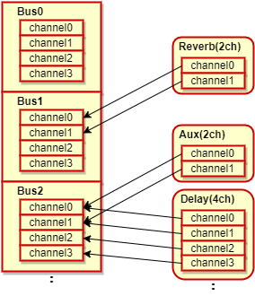
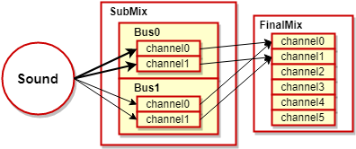
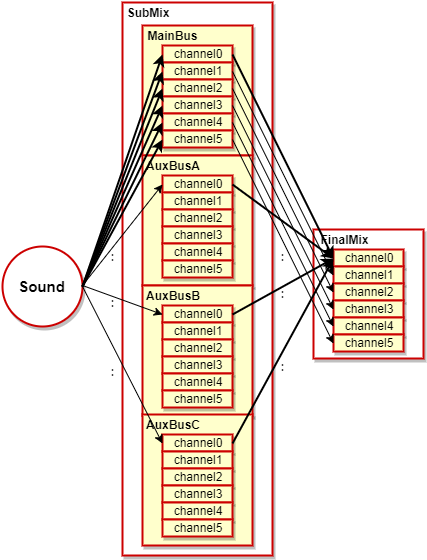
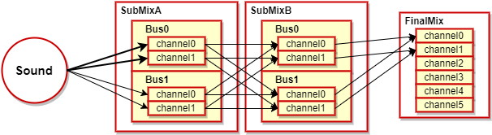
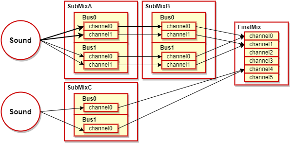

Contents
Overview
In the atk library, submixes are a type of object for managing buses.
Normally, atk allowed you to use the following 4 six-channel buses: main and AuxBus_A, B, and C.
However, internally, these buses were all managed using a single submix.
atk allows this submix to be customized by the user.
This allows the user to freely modify the bus configuration based on the use case, such as increasing the number of buses or customizing the number of channels per bus, to achieve more flexible bus management.
In addition to describing submixes and their relationship to buses, this page also describes how atk normally performs bus routing.
The process of configuring bus routing using submixes is described later.
The usefulness of submix customizing functions is currently under evaluation. Note that disruptive changes to the specifications may be introduced without warning.
Submixes
Sounds played by the atk library are output to a number of buses to apply effects-based signal processing before the final mix is ultimately output.
This section describes submixes, which are part of the system that implements this processing.
What Is a Submix?
This section describes the terminology for submixes.
Bus
The unit to configure effects in atk.
A bus is made up of one or more channels. When you configure effects,
you can set which channels of the bus to apply the effect's signal processing for channels.

Submixes
The target specified as the location to send the sound playback request in atk.
In the initial state, you do not need to explicitly specify the target during playback, because atk has only one submix.
The submix includes one or more buses, and it has a connection target that is either another submix or the final mix.
The result of mixing all buses in the submix is output to the connection target.

Default atk Structure
In the initial state, atk has the structure of one submix, the MainBus bus, and the three AuxBus buses A to C.
Each bus is made up of six channels.
(Reference: The send MAIN illustration in the Wave Sounds section of the SoundMaker manual.)

For more information about specifying the volume for each of the six channels and play sounds, see
the section about directly specifying the volume for each channel in Mixing.
User-Defined Submix Structures
In its initial state, atk has the default submix structure.
You can use a user-defined submix structure to increase or decrease the number of submixes and buses.
The usefulness of this feature is currently under evaluation. Note that disruptive changes to the specifications may be introduced without warning.
Benefits of User-Defined Submix Structures
User-defined submix structures have the following advantages.
- Adding effect buses
- For each submix, you can add a maximum of 1 ch x 24 buses.
- Adjusting the processing load
- In contrast to adding buses, by reducing the number of unnecessary effect buses and channels,
you can decrease the processing load on the audio renderer and perform tasks like increasing the number of voiced sounds.
- In contrast to adding buses, by reducing the number of unnecessary effect buses and channels,
- Streamlining processing flow for effects and volume
- Because you can specify the effects and volume for each submix and bus as a group,
you can streamline your game's sound processing pipeline.
- Because you can specify the effects and volume for each submix and bus as a group,
User-Defined Rules
By having the submix structure user-defined, users can change the structure, as in the following.
- Number of submixes and their connection targets
- Number of buses in each submix
- Number of channels in each bus
themselves.
This section describes the rules for changing the structure.
You can specify another submix as the connection target of a submix.
However, ultimately the submixes must be connected to the final mix.
If a submix is not ultimately connected to the final mix,
even if a sound playback request is sent to that submix, that sound will not be output.

Submixes can also be arranged in parallel.
When doing this, you cannot use one sound handle to control sounds that straddle multiple submixes.
When specifying a sound for multiple submixes, you must prepare separate sound handles.

The maximum total number of channels that can be set to one submix is 24.
For example, you cannot set five buses of six channels to one submix.
You cannot set buses with differing numbers of channels to one submix.
For example, you cannot set two buses of six channels, and two buses of two channels, to one submix.
Using User-Defined Submix Structures
The following procedures use sample code to show how to use user-defined submix structures within a program.
Initializing a Submix
First, when initializing SoundSystem, set the flag to enable user-defined submix structures.
When you do this, set the total number of channels the submixes will use in mixBufferCount, and the total number of submixes in mixBufferCount.
nn::atk::SoundSystem::SoundSystemParam param; param.enableCustomSubMix = true; param.subMixTotalChannelCount = totalBusCount * SubMixChannelCount; param.subMixCount = SubMixIndex_Count; |
Next, prepare and initialize the necessary number of instances of the submix.
nn::atk::SubMix g_SubMix[SubMixIndex_Count]; ... // Initializes SubMix[A]. std::size_t memSizeForSubMixA = nn::atk::SubMix::GetRequiredMemorySize( SubMixBusCount[SubMixIndex_A], SubMixChannelCount, SubMixBusCount[SubMixIndex_B], SubMixChannelCount ); g_pMemoryForSubMix[SubMixIndex_A] = nns::atk::Allocate( memSizeForSubMixA ); g_SubMix[SubMixIndex_A].Initialize( SubMixBusCount[SubMixIndex_A], SubMixChannelCount, SubMixBusCount[SubMixIndex_B], SubMixChannelCount, g_pMemoryForSubMix[SubMixIndex_A], memSizeForSubMixA ); ... |
Set the connection target for the initialized submix instance. Set the connection destination of each submix to the final mix.
// Connects each submix. g_SubMix[SubMixIndex_A].SetDestination( &g_SubMix[SubMixIndex_B] ); g_SubMix[SubMixIndex_B].SetDestination( &finalMix ); g_SubMix[SubMixIndex_C].SetDestination( &finalMix ); // Connects each SubMix[B] bus to the FinalMix bus. // (FinalMix has only one bus.) const int FinalMixBusIndex = 0; for(int busIndex = 0; busIndex < SubMixBusCount[SubMixIndex_B]; busIndex++) { g_SubMix[SubMixIndex_B].SetSend( busIndex, FinalMixBusIndex, 1.0f ); } |
Playing Submixes
When playing sounds using a user-defined submix structure, you must use SoundStartable::StartInfo to specify which submix to send the playback request to.
Specify the playback request target to StartInfo::pOutputReceiver, after configuring EnableFlagBit_OutputReceiver to StartInfo::enableFlag.
You can specify either SubMix or FinalMix for OutputReceiver.
If you want to set an effect, specify the bus and add the effect to the desired submix or the final mix, rather than using SoundSystem.
// Adds effects to the SubMix[B] AppendEffectBusIndex bus. // Used in confirming the bus send. g_SubMix[SubMixIndex_B].AppendEffect( &g_EffectReverb, AppendEffectBusIndex, g_pMemoryForEffectReverb, memSizeForEffectReverb ); ... // Specifies the submix in StartInfo and plays it. nn::atk::SoundArchivePlayer::StartInfo info; info.enableFlag |= nn::atk::SoundArchivePlayer::StartInfo::EnableFlagBit_OutputReceiver; info.pOutputReceiver = &g_SubMix[g_TargetSubMixIndex]; bool result = g_SoundArchivePlayer.StartSound( &g_SoundHandle, soundId, &info ).IsSuccess(); |
Important Information
- When the number of submixes and channels increase, the processing load on the audio renderer increases.
The load affects the number of sounds and effect processing, so we recommend checking it using Measuring Processing Time as a guide.
CONFIDENTIAL